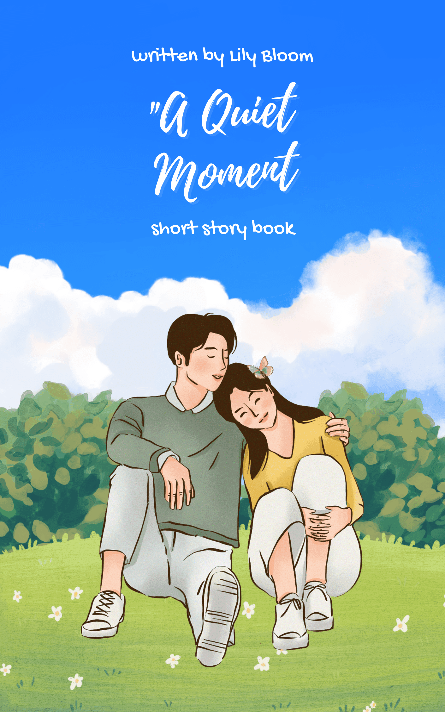
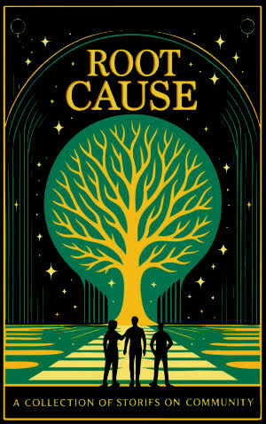
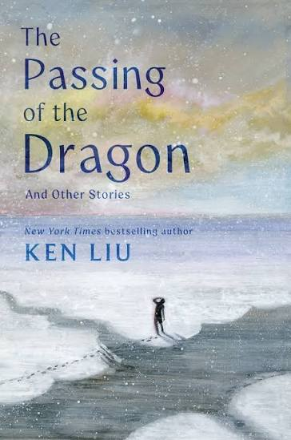
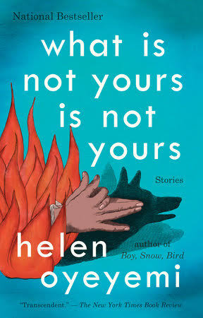
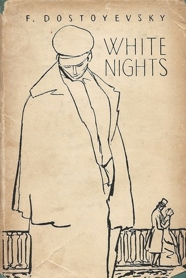
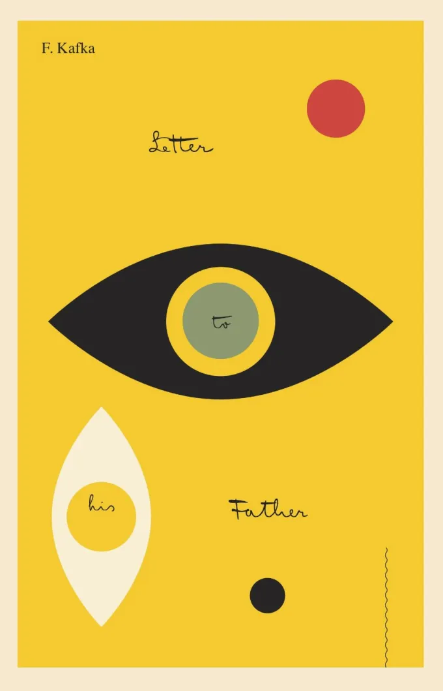

Discover magical adventures, wonderful characters, and stories waiting to be explored.
The Sanctuaire is a collection of simple and inspiring stories created for readers who love imagination, adventure, and wonderful characters. Choose a story and begin your next adventure.
Choose a story and discover a new world

A Quiet Moment is a heartwarming short story about two people who find comfort, love, and understanding in each other.

Root Cause is a collection of stories that explores the lives of people within a community and the challenges they face together.

is a collection of short stories exploring humanity, relationships, culture, and change. Through imaginative and emotional storytelling, the book follows characters facing difficult choices and experiences that challenge how they understand themselves and the world around them.

A collection of mysterious and imaginative stories exploring identity, relationships, loss, and the things people try to possess or let go.

A lonely dreamer meets a young woman during the quiet nights of St. Petersburg and quickly falls in love, leading to a bittersweet story of love, hope, loneliness, and heartbreak.

A deeply personal letter in which Franz Kafka reflects on his difficult relationship with his father, exploring fear, emotional distance, guilt, and the lasting impact of parental expectations.